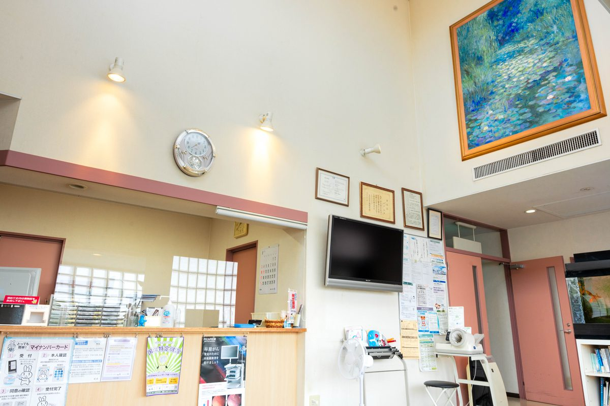

待ち時間はどれくらいですか？空いている時間帯を知りたいです
A. 回答待ち時間は、その日の受診人数や症状の内容によって大きく変わります。そのため「何分くらい」と一律にお伝えすることは難しく、あらかじめご了承いただければ幸いです。当院は月曜日から土曜日の朝7時から診療しておりますので、お仕事や学校の前の時間帯にも受診いただけます。その日の混雑の状況や、お支払いの方法についてのご質問は、お手数ですが受付時間内にお電話（086-525-0600）でご確認ください。

待ち時間についての考え方
診療所の待ち時間は、いくつかの要素が重なって決まります。次のような事情から、日によって差が出ます。
- その日の受診人数：季節性の感染症が流行している時期などは、受診される方が増えることがあります。
- 診察の内容：検査や処置が必要な方が続くと、次の方の順番までに時間がかかる場合があります。
- お体の状態が優先される場合：急を要すると判断した方の診察を先に行うことがあり、受付順と前後することがあります。
- 時間帯・曜日：一般に診療所では、受付開始直後や休診明けに受診が集まりやすいといわれますが、当院の実際の混み具合は日によって異なります。
そのため、当ページで「この時間帯なら空いています」と具体的にお伝えすることは控えております。ご来院前に混雑状況を知りたい場合は、お電話でお問い合わせください。その時点の受付状況をお答えできる場合があります。
診療時間とご来院のタイミング
当院の診療時間は次のとおりです。
| 曜日 | 午前 | 午後 |
|---|---|---|
| 月曜〜金曜 | 7:00〜12:00 | 14:30〜18:30 |
| 土曜 | 7:00〜12:00 | 14:30〜17:30 |
| 日曜・祝日 | 休診 | 休診 |
朝7時から診療しておりますので、出勤前・通学前の受診や、早い時間帯に用事を済ませたい方にもご利用いただけます。なお、診療時間の最終時刻は受付の締め切り時刻と異なる場合がありますので、遅い時間のご来院を予定されている場合は、あらかじめお電話でご確認いただくと確実です。
待ち時間を短くするための準備
受付や診察をスムーズに進めるために、ご来院前に次の点をご準備いただけると助かります。ご自身の待ち時間だけでなく、あとに続く方の待ち時間の短縮にもつながります。
ご来院前にご確認ください
- 健康保険証（マイナ保険証）・各種医療証を持った
- お薬手帳、または現在飲んでいるお薬がわかるものを持った
- 「いつから」「どんなときに」「どんな症状か」を思い出して整理した
- 他院で受けた検査結果や紹介状があれば用意した
- 初めての受診の場合は、問診票の記入時間を見込んで少し早めに家を出た
- お子さまの受診では、母子健康手帳を持った
特に、症状の経過をあらかじめ整理しておくと、診察の場で伝え漏れが減り、結果としてやりとりが短くなります。メモに書き出してお持ちいただく方法もおすすめです。

費用について
診察や検査の多くは健康保険の対象となり、ご負担割合に応じたお支払いとなります。診断書などの文書料や、一部の予防接種・自費の検査は保険適用外となる場合があります。
おおよその費用の目安についても、診察内容や実施する検査によって変わります。ご心配な場合は、受診時に受付や医師へ遠慮なくお尋ねください。
予約・事前のお電話が必要な場合
受診の方法は、内容によって異なります。
- お子さまの予防接種：お電話での予約制となっております。ご希望の日時が決まりましたら、あらかじめご連絡ください。
- 発熱などの症状がある場合：他の患者さんへの配慮のため、ご来院の前に一度お電話でご相談をお願いしております。受診の時間帯や入口についてご案内する場合があります。
- 上記以外の一般の診療：受診方法や予約の可否については、お電話でご確認いただくのが確実です。
インターネットからの予約や順番受付をご利用いただけるかどうかについても、お電話または公式ホームページで最新のご案内をご確認ください。
駐車場・アクセス
無料駐車場を22台分ご用意しています。両備バス「西中学校前」より徒歩3分、ニシナ玉島柏島店の西隣りです。混雑する時間帯は駐車場も埋まりやすくなることがありますので、お時間に余裕をもってお越しいただけますと安心です。
混雑状況・お支払い方法・受診方法は、お電話でお気軽にお問い合わせください
最終更新：2026年8月26日